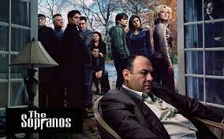

《소프라노스》(The Sopranos)는 1999년 1월 10일부터 2007년 6월 10일까지 HBO에서 방영한 총 6시즌의 86개 에피소드로 구성된 미국 드라마이다. 미국 뉴저지주를 기반으로 하는 이탈리아 마피아의 이야기를 다루었으며, 미국의 저명한 시나리오 작가이며 감독, 프로듀서인 데이비드 체이스에 의해 만들어졌다. 체이스는 《소프라노스》의 30개의 에피소드의 시나리오를 직접 집필하였다. 《소프라노스》의 에피소드들은 팀 밴패튼(Tim van Patten, 총 25편 감독) 외 여러 명의 감독에 의해 연출되었다.《소프라노스》는 많은 비평가들에게 미국 드라마 역사에서 가장 뛰어난 작품으로 평가되고 있다.[1][2][3] 21개의 에미상과 5개의 골든 글로브 상을 수상하였으며, 2013년에는 미국 작가 조합에서 이제 까지 쓰여진 미국의 최고의 티비시리즈로 선정되었고[4] , 티비가이드도 미국 최고의 티비시리즈로 랭크하였다.[5]
